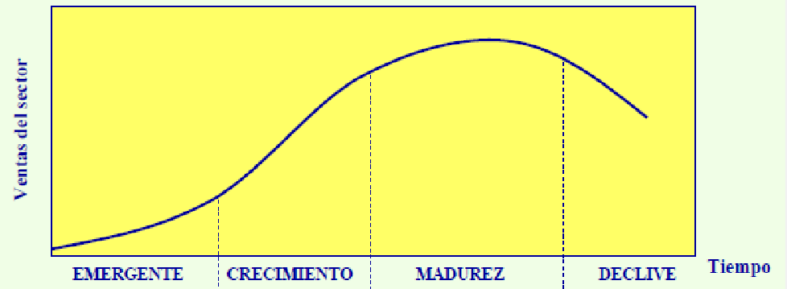
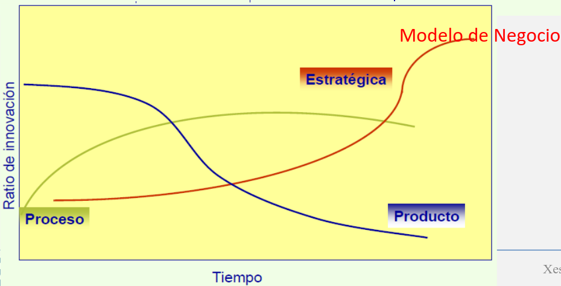
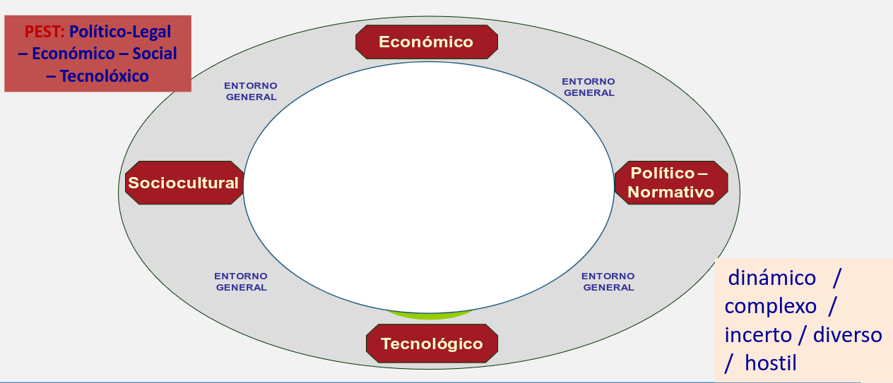
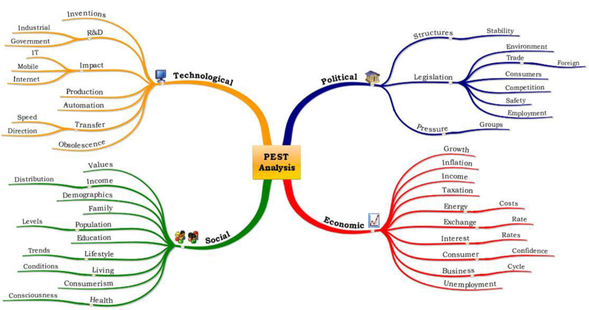
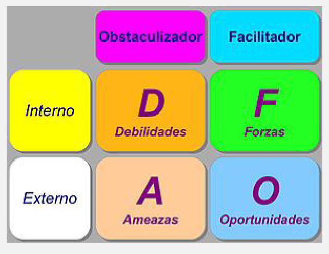
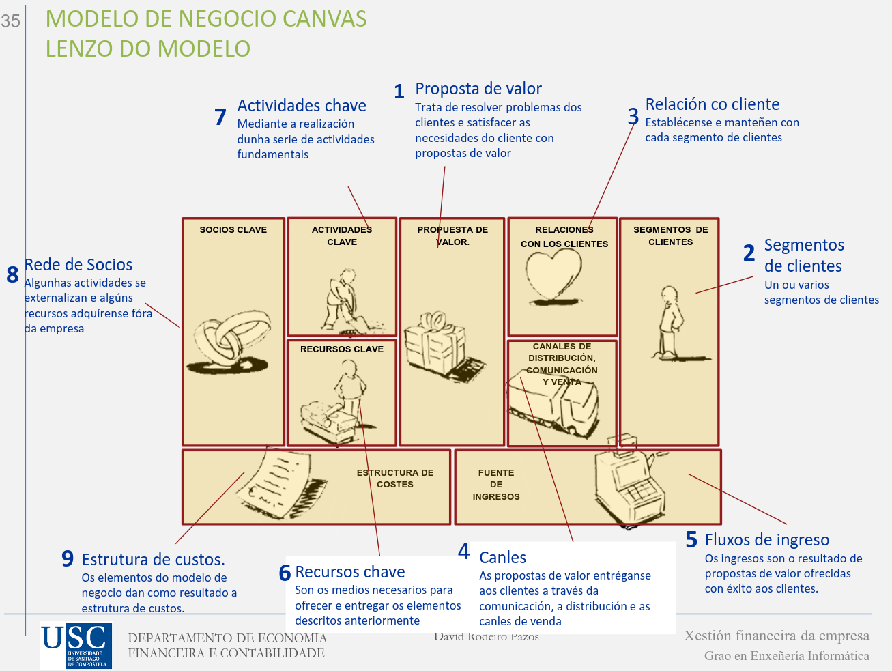
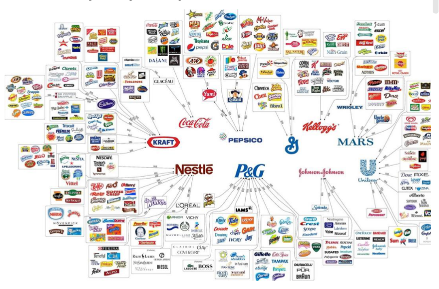
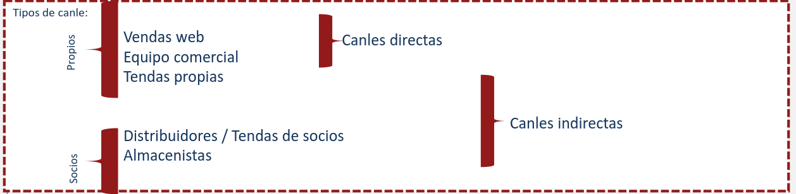
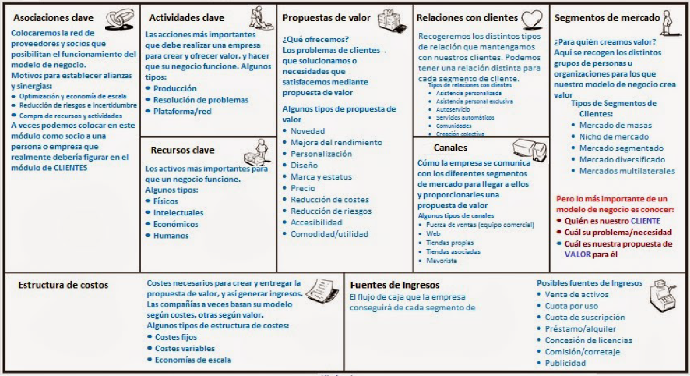

XEFE · curso 2
2. Creación de empresas, de la generación de ideas al Business Plan
Nota
Lo importante de este tema no es nada concreto, solo hace preguntas tipo test en el final
2.1 Creatividad e Innovación
2.2.1 Creatividad
Antes de empezar la creación de una empresa, es necesario buscar una idea. La creatividad es la capacidad de producir cosas nuevas y valiosas. Esta práctica es muy importante, como la innovación.
- Sin creatividad no hay nuevos productos
- Permiten mejorar los procesos
- Es imprescindible para una rápida adaptación a los cambios
- Se necesita para el crecimiento de la empresa.
Una de las claves de un buen proceso creativo es cuestionar todo. No debemos dar nada por sentado ya que la mejora que necesitamos puede estar en cualquier parte del proceso. Es necesario buscar oportunidades tratando de diferenciarnos de la competencia, buscando nuevas y mejores soluciones a problemas ya existentes o a nuevos problemas. Otra clave es la comunicación con la clientela, ya que nadie va a conocer mejor que ellos sus necesidades y los clientes son el mercado.
2.2.2 Innovación
Innovar consiste en generar y aplicar las ideas creativas nun contexto específico.
Según la naturaleza de la innovación tenemos:
- Innovación Tecnológica:
- Innovación de producto o servicio
- Innovación de Proceso
- Innovación Organizativa
- Innovación Comercial
- Innovación en modelo de negocio
Según el impacto de la innovación:
- Innovación Incrementable: Acción de crear un valor adicional sobre un producto que ya existe a través de mejoras.
- Innovación radical: creación de un nuevo producto o mejora en un producto ya existente que provoque un salto de calidad considerablemente grande.
La innovación tiene como beneficios la fidelización de los consumidores, prepara la empresa para el futuro y aumenta la competitividad.
Un producto que sale al mercado tiene un terminado ciclo de vida que se divide en 4 fases. Para que la empresa logra na cierta estabilidad, es necesario que posea productos en distintas fases, y que cuando uno alcance la etapa de madurez, tenga sustitutos en etapa de crecimiento.

Por otra parte, es muy posible que se llegue a un punto en el que nuestro producto no pueda ser mejorado, por lo que debemos innovar en distintos campos del proceso productivo. Mejoramos su proceso de producción o nuestro modelo de negocio (Innovación de proceso y de Modelo de negocio).

La estrategia de una empresa sería el camino para obtener ventaja sobre la competencia en un mercado determinado, analizando el punto de partida de nuestra empresa y la necesidad de saber hacia donde va nuestra organización
- Estrategias Porter: Costes, diferenciación, enfoque/especialización
- Innovación en producto: ventaja de diferenciación con un nuevo producto
- Innovación en proceso: ventaja de excelencia operativa o de coste al conseguir un buen funcionamiento y reducir el coste del producto
- Innovación en métodos de gestión: ventaja de coste/excelencia operativa y de diferenciación
- Innovación de modelo de negocio: ventaja de diferenciación, al diferenciarnos de la competencia.
Existen dos tipos de estrategias en cuanto a la innovación:
- Proactivas: anticipación a futuros requisitos.
- Reactivas: estas empresas trabajan según su escenario actual.
2.2 Análisis de Entorno
2.2.1 Análisis PEST-PESTEL
Este análisis se centra en el conjunto de factores del marco socioeconómico en el que la empresa devuelve su actividad.
- Económico: accesibilidad de un mercado a un producto. No podemos vender Maison Margiela en un país con población sumida en la pobreza.
- Político: restricciones de contaminación
- Tecnológico: velocidad de acceso a internet de una ciudad. No podemos introducir un producto que necesite 4G en mitad del monte
- Sociocultural: edad de la población, nivel educativo...

Nos ayuda a conocer mejor el entorno, siendo una empresa más fuerte.
2.2.2 Análisis del contorno micro. Fuerzas competitivas de un sector
El análisis de las fuerzas competitivas de Porter se utiliza para evaluar la rentabilidad a largo plazo de un sector y se basa en cinco fuerzas clave:
-
Poder de negociación de los clientes: Si los consumidores están organizados, pueden exigir mejores condiciones, lo que reduce los márgenes de la empresa. Las estrategias incluyen mejorar el marketing, la calidad del producto y las opciones de venta.
-
Poder de negociación de los proveedores: Los proveedores con gran poder pueden afectar precios y condiciones. Se puede contrarrestar aumentando la cartera de proveedores o estableciendo alianzas a largo plazo.
-
Amenaza de nuevos competidores: Si las barreras de entrada son bajas, otras empresas pueden entrar al mercado. Para protegerse, es clave mejorar la calidad, aumentar la inversión en marketing y tener una buena diferenciación del producto.
-
Amenaza de productos sustitutivos: La existencia de productos alternativos a menudo limita los precios. Para combatir esto, se deben diversificar los productos, mejorar la calidad y fortalecer el marketing.
-
Rivalidad entre competidores: Una fuerte competencia puede hacer el mercado menos atractivo. Se debe reducir costos, mejorar la calidad, y asociarse con otras empresas para sobresalir.
Este modelo ayuda a las empresas a entender su posición en el mercado y formular estrategias para enfrentar amenazas y aprovechar oportunidades.
2.2.3 Plan estratégico. DAFO
El análisis DAFO es una herramienta para evaluar las fortalezas, debilidades, oportunidades y amenazas de una empresa.
- Análisis Externo: Identifica las amenazas (factores negativos que afectan a la empresa) y oportunidades (factores positivos que pueden mejorar su situación).
- Análisis Interno: Examina las debilidades (aspectos internos desfavorables) y fortalezas (aspectos internos positivos) de la empresa, comparándolos con los competidores para evaluar su competitividad.
Este análisis ayuda a la empresa a conocer su situación y determinar la estrategia más adecuada.

## 2.2.4 Metodología Canvas Se trata de un **modelo de negocio simple donde se definen las principales características**.Solo ocupa una hoja, es visual, flexible (permite reaccionar, hacer ajustes...), ofrece una visión global de la organización, entiende la interrelación entre los distintos elementos del modelo. Además es fácil de entender y de aportar información, aporta valor al cliente y es un prototipo que permite representar la idea.

- **Propuesta de valor:** describe el paquete de **productos y servicios** que tienen valor para un segmento específico de clientes. - **Clientes:** se agrupa en distintos segmentos sobre los que una organización realizará una análisis sobre a cuales servir y cuales ignorar. **Se diseña el modelo de negocio al rededor de un entendimiento de sus necesidades específicas.** Debido a esto, hay marcas que segmenta o mercado e ofrecen productos distintos a públicos distintos.
- **Canales:** **describen como una compañía se comunica y lleva su segmento de clientes a su propuesta de valor.** Directors, indirectos, propios y de socios comerciales. Para alcanzar la rentabilidad: - Información o conciencia: como nos damos a conocer - Evaluación: como ayudamos a los clientes a evaluarnos - Compra - Entrega - Postventa
- Relaciones con clientes: es necesario establecer el tipo de relación que queremos desenvolver con nuestra clientela. Las motivaciones pueden ser adquirir nuevos clientes, retener clientes o incrementar ventas. Las relaciones deben poder ser desde personalizadas a automatizadas. También, ser los más eficientes y relevantes posibles, adaptadas a las necesidades del cliente.
- Flujo de ingreso: representa los ingresos que una empresa genera, proveniente de distintos segmentos de clientes.
- Recursos clave: Describen los elementos o activos más importantes que se requieren para que el modelo de negocio funcione.
- Físicos: activos físicos, como instalaciones de fabricación, etc.
- Intelectuales: los recursos intelectuales, como marcas, información privada, patentes, derechos de autor, etc. Son difíciles de desenvolver pero pueden alcanzar un gran valor.
- Humanos: su importancia varía en función del modelo de negocio, en uno las personas son más importantes que en otros.
- Económicos: algunos modelos de negocio requieren recursos o garantías económicas, com e dinero, líneas de crédito.
- Actividades clave: describen las acciones más importantes a desenvolver para que funcione el modelo de negocio:
- Producción: actividades relacionadas con el diseño, fabricación y la entrega de un producto en grandes cantidades o con una calidad superior. Es predominante en modelos de negocio de las empresas de fabricación
- Resolución de problemas: busca soluciones nuevas a los problemas de cada cliente.
- Plataforma/red: los modelos de negocio diseñador con una plataforma como recursos clave están subordinados a las actividades clave relacionadas con la plataforma o red.
- Red de socios: describe las alianzas más importantes que se requieren para que el modelo de negocios funcione. Existen distintos tipos:
- Coopetición: asociaciones estratégicas entre empresas competidoras
- Join ventures: alianzas comerciales con el fin de crear nuevos negocios
- Relaciones cliente-suministrador: el objetivo es garantizar la fiabilidad de las suministraciones. Hay empresas que le exigen a sus suministradores que ellas sean sus clientes principales para poder mantener una producción JIT basada e que los recursos lleguen a la fábrica a medida que se necesitan, sin esperas, ni necesidad de almacenarlo.
- Estructura de Costes: describe todos los costos que implica la puesta en marcha del modelo de negocio. Estructuras de costes:
- Según los costes: fijos, variables, de escala o de campo.
- Según el valor: premium, personalizados.

2.3 El plan de negocio
El plan de negocio es un documento que describe, de manera general, un negocio y el conjunto de estrategias que se aplicarán para su éxito. Este documento presenta un análisis del mercado y establece el plan de acción que se seguirá para alcanzar los objetivos propuestos.
El plan de negocio tiene tanto un uso interno, desde el punto de vista de la gestión y planificación, como un uso externo, funcionando como una herramienta para la promoción y comunicación de la idea de negocio, ya sea para venderla o para obtener financiación. Sirve como una guía para el emprendedor, ya que permite una mejor comprensión de la empresa, obligando a analizar los factores internos y externos que afectarán el progreso del negocio. Además, los planes de negocio son documentos que están sujetos a constantes actualizaciones, adaptándose a las características dinámicas de las herramientas de gestión empresarial.
2.3.1 Ventajas del Plan de Negocio
Externas:
- Permite la presentación del proyecto y de la(s) persona(s) emprendedora(s) ante terceros, exponiendo las cualidades del proyecto a nivel técnico, legal, comercial, económico y financiero.
Internas:
- Ayuda a las personas emprendedoras a estructurar la información del proyecto y a identificar lagunas o necesidades no detectadas.
- Garantiza una imagen profesional en la presentación ante terceros.
- Ofrece una visión global de la viabilidad del negocio.
- Detecta posibles diferencias de criterio entre las personas socias.
2.3.2 Estructura de un Plan de Negocio: Viabilidad Comercial, Técnica y Económico-Financiera
No existe un modelo único para el plan de empresa; puede adoptar diferentes formas, formatos y tamaños. Sin embargo, hay elementos comunes que suelen estar presentes en todos los modelos:
- Presentación del proyecto
- Análisis del mercado
- Plan de comercialización
- Plan de producción o servicio
- Plan de organización y recursos humanos
- Plan de inversiones y financiación
- Plan de viabilidad económica y financiera
- Plan de puesta en marcha